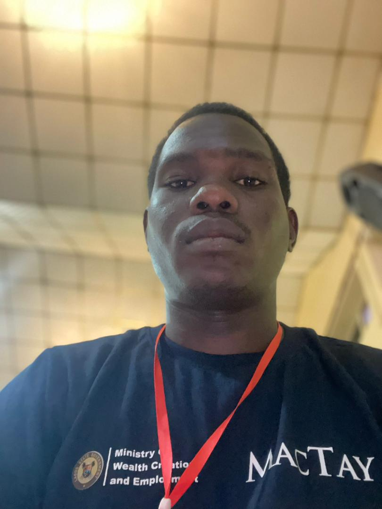

Frontend Developer
Email: ikareemabiodun730@gmail.com
Social Links
I am an enthusiastic Nigerian based in Lagos, currently pursuing my passion for frontend development. When I'm not coding or debugging, you'll find me immersed in video games, particularly enjoying strategic RPGs and competitive multiplayer games. I'm also an avid movie enthusiast who appreciates everything from thrilling action sequences to compelling storylines in sci-fi films. My background in science has shaped my analytical approach to problem-solving, which I now apply to creating seamless web experiences. I balance my coding journey with gaming sessions to unwind and stay creative, while keeping up with the latest tech trends and web development practices.
Current Location: Ebute-Metta, Lagos State
Time (UTC):